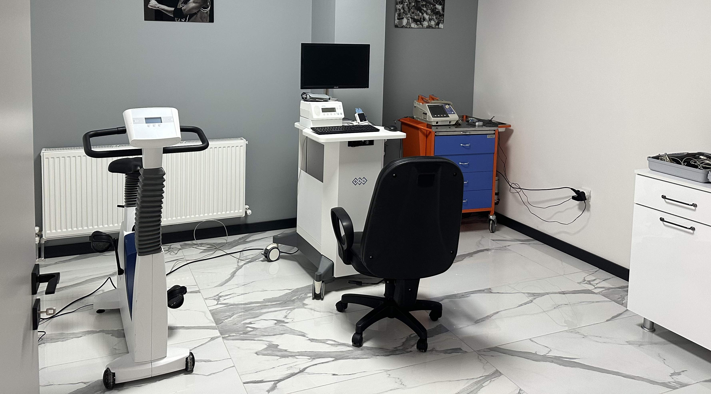
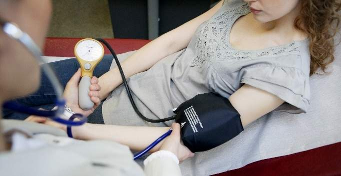

Tanısal Testler
Efor Testi
Kalp damarlarındaki tıkanıklıkları yüksek çözünürlüklü görüntüleme ile tespit ediyor, gerekli durumlarda ilaç salınımlı stentler ile damar açıklığını sağlıyoruz.
- Bilekten (Radial) Anjiyo imkanı
- Kompleks damar tıkanıklığı tedavisi
- IVUS / FFR ile hassas ölçüm

Girişimsel Kardiyoloji
Koroner Anjiyografi ve Stent
Kalp damarlarındaki tıkanıklıkları yüksek çözünürlüklü görüntüleme ile tespit ediyor, gerekli durumlarda ilaç salınımlı stentler ile damar açıklığını sağlıyoruz.
- Bilekten (Radial) Anjiyo imkanı
- Kompleks damar tıkanıklığı tedavisi
- IVUS / FFR ile hassas ölçüm

Tanısal Testler
Ekokardiyografi (EKO)
Radyasyonsuz kalp muayenesi ile kalbinizin yapısını, kapakçık hareketlerini ve kasılma gücünü canlı analiz ediyoruz.
- Kapak hastalıkları erken teşhisi
- Kalp yetmezliği analizi
- Strain (Doku Takibi) görüntüleme

Girişimsel Kardiyoloji
Tansiyon ve Ritim Holter
Gün içindeki çarpıntı, bayılma veya tansiyon düzensizliklerini kesintisiz kaydeden giyilebilir teknolojilerle takip ediyoruz.
- 24-48 Saatlik Tansiyon Takibi
- Uzman ritim analizi
- Atriyal Fibrilasyon taraması